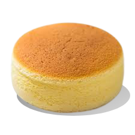

Jiggly Japanese cheesecake — by now the stuff of legends. A confection with a sweet fluffy crumb that defies gravity. A cottony “cheesecake” made with eggs and cream cheese that is a delight to both eat and hold.
PPre-heat oven to 320℉
In a medium saucepan, melt the cream cheese, butter, and whole milk over low heat. (Before adding, you can cut butter and cream cheese into small cubes to help speed the process.) Set aside when completely melted.
Separate your eggs. (You will get better results if eggs are at room temperature.) Set aside six of the yolks and all of the whites for the recipe.
Line your spring-form pan with parchment paper. Make sure to wrap the bottom with foil to prevent any leakage.
Using a stand mixer, pour your thirteen egg whites into the bowl. To help with the stability of the foamy peaks, add a ¼ t. of cream of tartar to the egg whites. Mix on high for two minutes. Gradually add the sugar. (This process should take about five to seven minutes.)
Take the melted cream cheese mixture, and add it to the egg yolks. Whisk together until well incorporated. Sift in the flour, followed by the corn starch. Add one teaspoon of vanilla.
At this point you will want to start boiling some water for a bain-marie, or water bath which will keep the cheesecake from cracking.
Combine the meringue into the flour and egg mixture, flipping over and under, over and under using a wide spatula.
Now place the spring-form pan with cheesecake mixture inside a second, larger pan. Add hot water to the bottom pan until it is half-full. Bake for 25 minutes at 320 degrees. Reduce temperature to 280℉ and cook for another 55 minutes. (I added an additional 30 minutes of baking time because mine wasn’t finished.)